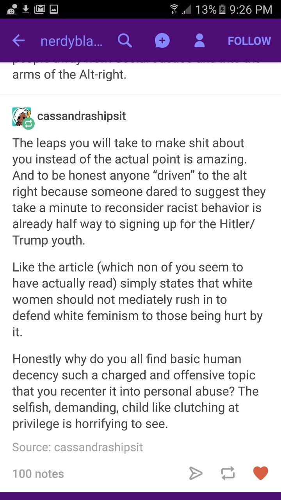
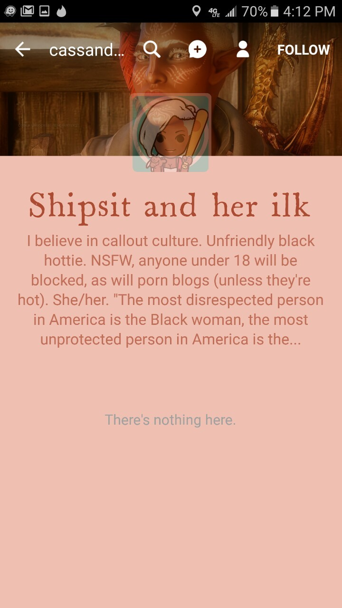

The charming response to this post , which I was of course blocked from http://isaacsapphire.tumblr.com/post/152551057649/so-you-got-called-out-on-social-media-by-someone. Clearly @earlgraytay, @thathopeyetlives, and myself are not the targets of this, we are already essentially Nazis and the point of responding was to perform for people who already agreed with her, not to change anybody’s mind.
This makes me so angry, and it breaks my heart. I despise the Far Right, I’ve already walked away from it once, but this relentless insistence on acquiescence by White people, the increased violent rhetoric and actual political violence in general (both sides are egging each other on) forces me to take a second look at something that’s like opening a refrigerator in an abandoned home: you’re going to throw up a little and you knew that.
I don’t want to go back into White patriarchy and loose my personhood while squeezing out babies and serving my Lord by scrubbing the toilet and making dinner. I’ve already chosen death over that, I’ve already walked away from my father’s house.
But, I’m not sure if the future that the Tumblr-left promises is any brighter, and it may be darker, for me personally as a blue collar White woman, and in general. “Woke” Black people make a point of acting like the worst White racists, and yell “PREJUDICE PLUS POWER!!!11” at anybody stupid enough to call them on it.
Everybody bleeds the same color, and everybody’s shit stinks.
A world of sympathy here. I think a lot of people are looking for a community now that isn’t “traditional conservative norms” but also isn’t “in the middle of endless witch hunts to purify their ranks in some great political crusade.” I don’t know why we’ve had such trouble building new communities outside those two spheres, but clearly we haven’t yet.
“I don’t know why we’ve had such trouble building new communities outside those two spheres…”
Oooh! Oooh! Pick me! I know this one!
(Seriously,
this is one of those Big Topics about which I keep meaning to write a
Big Essay, since I have Big Speculative Thoughts that seem like they
might cash out into something useful.)
Whatever your
community is like, from the moment it comes into existence, it’s going
to be riddled with conflicts. Someone’s going to feel insulted or
ignored by someone else. Someone’s going to have a nasty breakup or an
ugly romantic rivalry. Someone’s going to get into a big fight about
the Important Issues of the Day, or maybe about the Right Direction for
the Group. You know the drill.
Most of community maintenance theory devolves to “how do you deal with those conflicts as they arise?” This is one of the big tentpole functions of culture.
Traditional
conservative norms (of whatever stripe) cut down on conflicts by
deciding on a lot of the winners and losers in advance. Barring
specific special circumstances, Parent beats Child and Husband beats
Wife and Boss beats Employee. Someone who Breaks the Taboo
automatically loses. Things like that. This tends to be stupefyingly
unfair, and it’s not hard to see why we’ve spent centuries now
gradually breaking away from it…but it does prevent fighting, since everyone knows his place and everyone knows how a fight will go down.
(In
theory. For this to work really well, it requires stable powerful
hierarchies; if the hierarchies are unstable or not-powerful-enough,
there will be constant coup attempts, which is a fair summary of a lot
of human social history. But that’s the idea.)
Or
you can jettison all that, like most of us have done, and go with modern
norms instead. Y’know. Justice and Fairness. Serious principles
applied seriously.
There are great things about that system. It is, uh, just and fair. (In theory…) But it also encourages conflict. Whatever the fight is, everyone feels that he has a valid point to make. If the way to win your fight is to have a valid point, then everyone thinks that he can and should win. And if the community is seriously trying to be Principled in a modern way, it has to take all those points seriously, it can’t just shut someone down.
Where do you think an ideological witch hunt starts? It starts with someone’s grievance. Often it’s a personal grievance, of the most classic tribal-dynamics kind: you’re not giving me enough resources, you’re not giving me enough respect, you’re not giving me my due. On occasion, it’s instead a genuinely abstract grievance raised on behalf of some notional third-party victim. Either way: the grievance holder goes before the community and says “this is not just, this is not fair.” Lots of other people chime in, because they share similar grievances – even if they wouldn’t have thought in those terms beforehand – or because they don’t want such grievances to be seen as legitimate demands for redress. Now you have political factions, which will tear at each other as political factions always do. And the community has to decide between them on a principled basis, because its identity and its conflict-resolution machine are rooted in principle. It can’t just throw the original “litigant” a bone, it has to acknowledge a Rule, and then enforce it. At which point other potential litigants will strive to demonstrate that they’re covered by the Rule. At which point the Rule itself becomes part of the community’s fabric, and ignoring or flouting it becomes disloyal dissension.
You can get around this dynamic by building your community on the right principles. You can have a neo-tradcon revivalist group; you can construct whatever conflict-averting precedence norms you want. But whatever you do, if you want to dodge the witch hunts, you have to explicitly prioritize your local norms over abstract justice. (Or, alternatively, define your local norms as “justice” and call it a day.) You have to say that when some poor community member loses a conflict in a grossly unfair way, you don’t care, because the norms are more important than making things right for him. Otherwise you sow the seeds for endless justice-driven politicking and dissension.